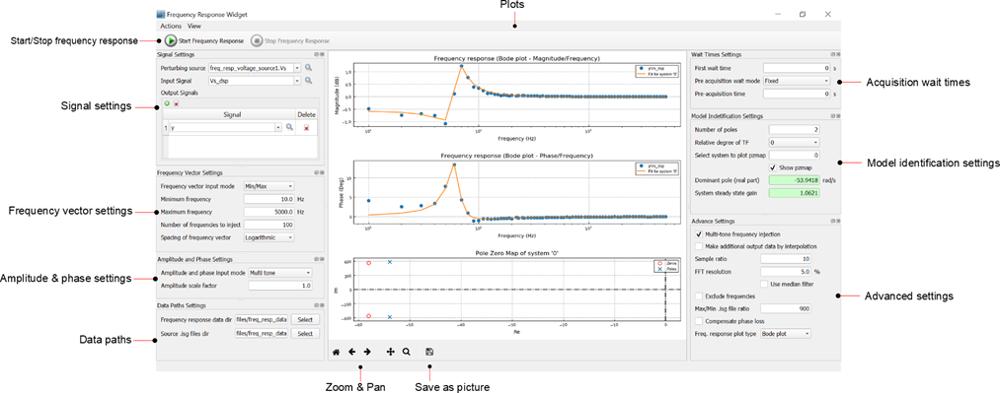
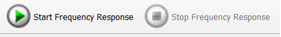
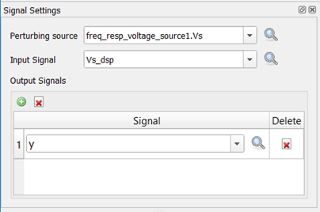
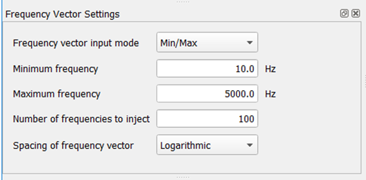
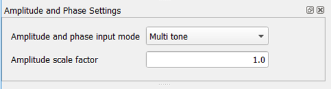
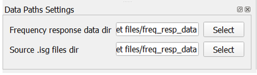
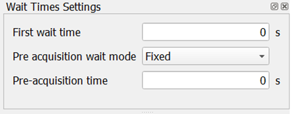
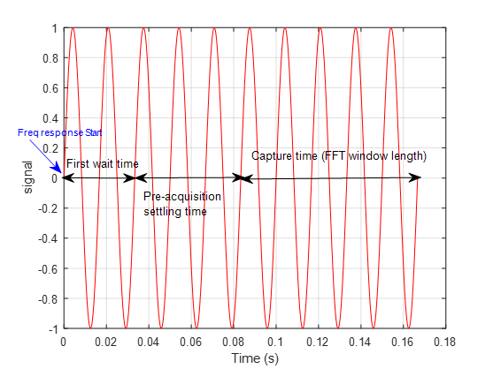
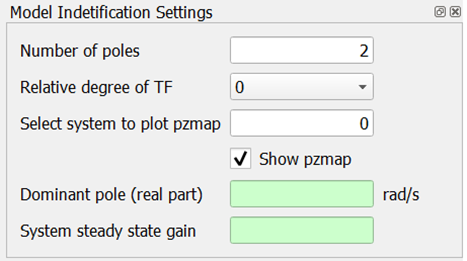
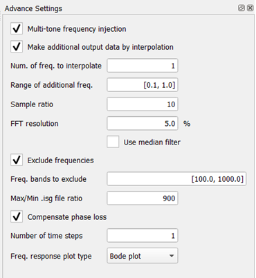

Analysis Widgets
This section describes the analysis widgets
The following widgets are available in this group:
- Frequency response widget - A tool that measures the runtime
frequency response of dynamical models and systems in the real-time
simulation environment. It can be applied to:
- Impedance analysis of an electrical network in the real-time simulation with or without real controller in the loop, e.g. input/output impedance measurement
- Transfer function measurement such as sensitivity transfer function, loop gain, load disturbance, etc.
- Robust controller tuning in runtime

- Start/Stop

Click the ‘Start Frequency Response’ to start the widget. Click ‘Stop’ to stop the widget.
N.B:
1. Widget will NOT start if there is a scope on HIL SCADA
2. Widget will NOT start if there are uncompleted entry fields in the interface
- Signal settings subpanel
The signals settings subpanel is shown in the figure below.
Figure 2. Signal settings subpanel 
- Perturbing source
Select a ‘Perturbing source’ from the drop down list or type in the name if known. A perturbing source must be an electrical voltage or current source. The perturbing source provides a set of sinusoidal disturbances for the frequency response.
- Input signal and Output
signals
Select an ‘Input signal’ and ‘Output signals’ from the drop down list or type in the names. Input and output signals can be electrical measurements or signal probes.
Input signal is the input of the system from a dynamical systems perspective (i.e. denominator of input-to-output relationships). There can only be one input.
Output signals are the outputs from a dynamical systems perspective (i.e. numerators of input-to-output relationships). There can be many outputs at a time.
- Perturbing source
- Frequency vector settings subpanel
The frequency vector settings subpanel appearance and description are provided below.
Figure 3. Frequency vector settings subpanel 
- Frequency vector input
mode
Select ‘User input’ or ‘Min/Max’ as the frequency input mode.
If ‘User input’ is selected, a list box appears which lets you enter a vector of frequencies in Hz, e.g. [10.0, 12.5, 20.0]
If ‘Min/Max’ selected (recommended), the minimum frequency box, maximum frequency box, number of frequencies to inject box, and spacing type will appear. The widget auto-generates a vector of frequencies between the min and max values.
N.B: In the Advanced Settings subpanel, if the ‘Multi-tone injection’ is selected, then the algorithm will attempt to inject all frequencies or as many frequencies as possible at once. Since this mode uses only harmonics of the minimum frequency, the number of frequencies may be less than the number input in ‘Number of frequencies to inject’. - User specified frequency vector
Enter a vector of frequencies to be injected (in Hz) e.g. [10.0, 12.5, 20.0]
N.B: only appears if frequency vector input mode is ‘User input’
- Minimum frequency and Maximum frequency
Enter minimum and maximum frequencies (in Hz)
N.B: only appear if frequency vector input mode is ‘Min/Max’
- Frequency vector input
mode
- Amplitude and phase settings
subpanel
The amplitude and phase settings subpanel is shown in the figure below with a brief description of inputs.
Figure 4. Amplitude and phase settings subpanel 
- Amplitude and phase input
mode
Select ‘User specified scalar’ or ‘Multi tone’ for amplitude and phase input mode.
If ‘User specified scalar’ is selected, the amplitude and phase input boxes will become visible.
If ‘Multi tone’ is selected, the amplitude and phase input boxes will be hidden. The amplitude and phase of each frequency in a set are internally computed to minimize the crest factor. The amplitude is computed as:A=1/√NWhere A=amplitude; N=number of frequencies in a set
The phase is computed as:φi=(π√(i-1))/NWhere φi = phase (radians) of the ith frequency in a set; i = index of frequency in the frequency set.
- User specified amplitude
Enter the amplitude to be used for all the frequencies to be injected in the frequency response.
N.B: only appears if amplitude and phase input mode is ‘User specified scalar’
- User specified phase
Enter the phase (in degrees) of the frequencies to be injected.
N.B: only appears if amplitude and phase input mode is ‘User specified scalar’
- Amplitude scale factor
If the amplitude and phase input mode is ‘Multi tone’, then the value entered in “Amplitude scale factor” will be multiplied with the internally-computed amplitude to result in a final amplitude. i.e. the final amplitude is:
A=(amplitude scale factor)×1/√N
- Amplitude and phase input
mode
- Data paths settings subpanelThe data paths subpanel is shown in the figure below:
Figure 5. Data paths subpanel 
- Frequency response data
dir
Click ‘Select’ to select a path in which to save frequency response data for post analysis. Data is saved as .mat file.
- Source .isg files dir
Select where to save .isg files (lookup tables). Lookup tables are generated when ‘Multi-tone frequency injection’ in the Advance Settings subpanel is selected.
- Frequency response data
dir
- Wait times settings subpanel
- The wait times settings subpanel is shown in the figure
below:
Figure 6. Wait times subpanel 
- First wait time
Enter first wait time in seconds. When ‘Start frequency response’ button is pressed, the simulation will run for this amount of time before any data capture is initiated.
- Pre-acquisition wait
mode
Specify how you want the frequency response to wait before capturing data in between frequency sets or single frequency injections. Select either ‘Fixed’ or ‘Frequency dependent’. If ‘Fixed’ is selected, the user has to input a fixed duration in seconds.
If ‘Frequency dependent’ is selected, the user must specify the number of perturbation periods or cycles to wait. In this case the frequency used to compute the wait time is the minimum frequency in a frequency set. - Pre-acquisition settling time
Enter wait time (in seconds).
N.B: only appears if Pre-acquisition wait mode is ‘Fixed’
- Pre-acquisition settling periods
Enter number of periods.
N.B: only appears if Pre-acquisition wait mode is ‘Frequency dependent’
An illustration of the first wait time, pre-acquisition settling time, and capture window are shown in the figure below.Figure 7. Illustration of different wait times and capture time 
- The wait times settings subpanel is shown in the figure
below:
- Model identification subpanelA figure of the model identification settings subpanel and description are provided below:
Figure 8. Model identification subpanel 
- Number of poles
Enter number of poles to use in fitting a transfer function to the frequency response data (must be greater than 1).
- Relative degree of
TF
Select the relative degree of the transfer function fit. It can either be 0 (which means number of zeros is equal to number of poles) or 1 (which means there is one less zero than poles).
- Select system to plot
pzmap
If multiple outputs were selected, this will result in multiple frequency response plots. However only 1 transfer function fit is done at a time. Use this input to select which fit to compute. It is an integer numbered from 0.
- Show pzmap
Select to show the pole-zero map of the transfer function fit.
- Dominant pole (real
part)
This output displays the real part of the dominant pole resulting from the transfer function fit of the selected frequency response.
- System steady state
gain
This output displays the steady state gain (DC gain) of the transfer function fit of the selected frequency response.
N.B: In reality, the HIL emulates systems in discrete time, fixed time step. However the transfer function fitting is done in continuous time (Laplace).
- Number of poles
- Advanced settings subpanelThe advanced settings subpanel is described below.
Figure 9. Advanced settings subpanel 
- Multi-tone frequency
injection
Select whether to inject many frequencies at the same time or whether to inject only one frequency at a time. Injecting many frequencies at a time (recommended) can significantly shorten the frequency response time. Injecting one frequency at a time usually produces more accurate results but can take a long time.
- Make additional output data by
interpolation
Select this option if you wish to add data points at some desired locations. These additional points are not physically injected into the simulation, they are only interpolated from the neighboring points.
If this option is selected, it causes 2 additional boxes to appear: number of frequencies to interpolate and the range of the additional frequencies. - Number of frequencies to interpolate
Enter the number of additional frequencies to interpolate (positive integer). E.g. 5
N.B: only appears if ‘Make additional output data by interpolation’ is selected
- Range of additional
frequencies
Enter the range of additional frequencies, for example: [10, 20, 30, 100]. This is interpreted as 5 additional data points between 10 and 20, and 5 additional points between 30 and 100. The range must contain an even number of elements and must be monotonically increasing. These points are logarithmically spaced.
- Sample ratio
Enter the ratio between the fft sample frequency and the maximum frequency in the vector of frequencies. This sets the fft sample frequency as follows:
f(sample,fft)=(sample ratio)×f(max,vector)Where fsample, fft = FFT sampling frequency
Sample ratio = Ratio of the fft sampling frequency to the largest frequency in the vector of frequencies
fmax,vector = Largest frequency in vector as input by user.
According to sampling theory, the sample ratio should be greater than 2. In practice, to get good results, use values between 5 to 10.
Due to HIL sampling limitations, the minimum sampling time (i.e. maximum sampling frequency) is limited to the electrical simulation time step.
The minimum sampling frequency (i.e. maximum sampling time) will be limited internally to 2 times the largest frequency in the frequency vector.
N.B: The fft sampling frequency will often not be exactly the product of sample ratio and maximum frequency in the vector, but it will be close. This is due to some details in the way simulation and data capture are done in the HIL. - FFT resolution
Enter the fft resolution as a percentage of the smallest frequency in the vector of frequencies. FFT resolution determines the fft bin size, i.e. it sets how large the difference between two frequencies must be for the fft algorithm to distinguish them.
FFT resolution also sets the number of samples and therefore the capture window/time.Nsamples=next even (round(fsample,fft/(((fft resolution×fmin,vector)/100) )))Where Nsamples = number of samples to capture
fsample, fft = FFT sampling frequency
fft resolution = Resolution of the fft (in percent)
fmin, vector = Minimum frequency in the frequency vector
Due to HIL limitations, number of samples must be greater than 256. Maximum number of samples depends on number of signals being captured. Please see HIL schematic guide. - Use Median Filter
Select this option to process the frequency response data through a median filter. This may improve the results particularly when the original data is very noisy.
- Exclude frequencies
Select this option to exclude some frequencies from being injected. This option may be useful if the system under test has natural resonances at some frequencies which the user wants to avoid exciting or does not want to observe. Selecting this option will cause a list box ‘Frequency bands to exclude’ to appear.
- Frequency bands to exclude
Enter the frequency bands to exclude from the simulation. For example if user enters: [10, 20, 30, 100], this is interpreted as exclude all frequencies between 10 and 20, and between 30 and 100. The range must contain an even number of elements and must be monotonically increasing.
N.B: only appears if ‘Exclude frequencies’ is selected
- Max/Min .isg file ratio
In HIL, electrical sources are implemented with lookup tables or .isg files. Due to some details in this implementation, it is not possible to represent two frequencies in the same table that are more than 1000 times apart without some significant loss in fidelity. E.g. if 1.0Hz is the minimum frequency, the maximum frequency that should be represented in the same lookup table is 1000Hz. Therefore when the range of frequencies is wide, they are broken up into groups in which the ratio between the smallest and largest is the value input in ‘Max/Min .isg file ratio’. In general, small values may give more accurate results but will cause longer frequency response cycle time.
- Compensate phase loss
The HIL emulates systems in discrete time, with fixed time step. This can result in delays that cause additional phase loss when frequency approaches Nyquist limit. Selecting this option allows the user to enter a number of electrical time steps for phase compensation.
- Number of time steps
Enter a number of time steps to use for phase compensation. The phase compensation is computed in Laplace domain as:
Phase compensation=e(s×(number of time steps)×Ts )Where Ts is the electrical simulation time step. - Frequency response plot
type
Select the plot type of the frequency response. It can be either ‘Bode’ where magnitude and phase are plotted, or ‘Nyquist’.
- Multi-tone frequency
injection
- Plots
This window displays the frequency response plots. Measurements are dotted, while the transfer function fit is shown as a continuous line. The first two graphs are magnitude and phase if ‘Bode plot’ is selected as the frequency response plot type. If ‘Nyquist’ is selected, the first plot becomes a Nyquist plot. The last plot is a pole zero map of the transfer function fit if the ‘show pzmap’ checkbox is selected.